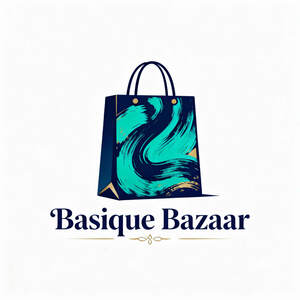

Trade Mark Journal No.2025/043 24 October 2025
UK00004277799 14 October 2025 (21,35)

- Class 21
- Household or kitchen containers; Household or kitchen utensils; Containers for household or kitchen use; Household utensils; Kitchen containers; Household containers; Dishes [household utensils]; Kitchen utensils; Sieves [household utensils]; Sifters [household utensils]; Graters [household utensils]; Serving scoops [household or kitchen utensil]; Plastic bowls [household containers]; Tableware, cookware and containers; Disposable lids for household containers; Moulds [kitchen utensils]; Molds [kitchen utensils]; Spatulas [kitchen utensils]; Tenderizers [kitchen utensils]; Laundry balls for use as household utensils; Mixing spoons [kitchen utensils]; Lockable non-metal household containers for food; Cinder sifters [household utensils]; Graters [non-electric household utensils]; Utensils for household purposes; Kitchen utensils of silicon; Combined lids for kitchen containers; Containers for household use; Trays [household]; Trash containers for household use; Heat-insulated containers for household use; Household containers for storing pet food; Compost containers for household use; Cooking utensils; Containers for ice, for household purposes; Kitchen jars; All-purpose portable household containers; Aluminium moulds [kitchen utensils]; Turners (kitchen utensil); Egg separators [kitchen utensils]; Cooking utensils for use with domestic barbecues; Cooking utensils, non-electric; Disposable aluminium foil containers for household purposes; Household utensils for cleaning, brushes and brush-making materials; Non-electric food blenders [for household purposes]; Household containers of precious metal; Utensil jars; Lotion containers, empty, for household use; Disposable aluminum foil containers for household purposes; Valet trays [receptacles for small objects] for household purposes; Colanders for household use; Griddles [cooking utensils]; Kitchen sponges; Kitchen utensils, not of precious metal; Colanders for household purposes; Non-electric food mixers [for household purposes]; Tortilla presses, non-electric [kitchen utensils]; Cast stone containers for household; Glassware for household purposes; Trays for household purposes; Non-electric griddles [cooking utensils]; Griddles [non-electric cooking utensils]; Basting spoons [cooking utensils]; Kitchen sieves; Laundry bins for household purposes; Jars for household use; Baking utensils; Trivets [table utensils]; Kitchen graters; Wire baskets [cooking utensils]; Cooking pots, non-electric / Non-electric cooking pots; Toilet and bathroom cleaning utensils ; Strainers for household use; Cooking utensils for barbecue use; Presses (Garlic -) [kitchen utensils]; Garlic presses [kitchen utensils]; Metal baskets for household purposes; Laundry baskets for household purposes; Toothbrush containers.
- Class 35
- Online retail store services relating to clothing; Online retail store services relating to cosmetic and beauty products; Online retail services relating to toys; Online retail services relating to jewelry; Retail services in relation to cookware; Retail services in relation to tableware; Retail services relating to home textiles; Retail services in relation to furniture; Retail services in relation to lighting; Retail services relating to sporting goods; Retail services in relation to bags; Retail services in relation to pet products; Retail services in relation to foodstuffs.
Basique Bazaar Ltd